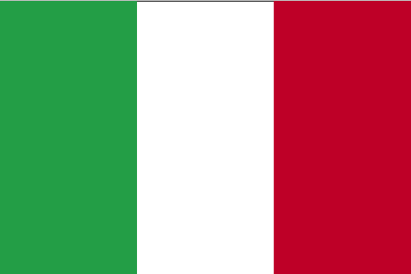

|  |
| La bandiera italiana è il Tricolore italiano: verde, bianco e rosso, a tre bande verticali di eguali dimensioni, così definita dall'articolo 12 della Costituzione della Repubblica Italiana del 27 dicembre 1947, pubblicata nella Gazzetta Ufficiale della Repubblica Italiana nº 298, edizione straordinaria, del 27 dicembre 1947. |
| home |